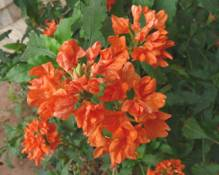

HORT 281 :: Lecture 39 :: PRODUCTION TECHNOLOGY OF CROSSANDRA

PRODUCTION TECHNOLOGY OF CROSSANDRA
Scientific name: Crossandra spp.
Family: Acanthaceae
Crossandra is an important commercial flower, mainly grown in India, tropical Africa and Madagascar. The flowers are commonly used for hair adornment. Though not fragrant, flowers are very popular because of its attractive bright colour, light weight and good keeping quality. These are used for making garland, either alone or in combination with jasmine flowers. Using Crossandra flowers in combination with jasmine is becoming increasingly popular in India, particularly in southern parts, because the jasmine flowers provide colour contrast and the desired fragrance.
Species and Cultivars
Crossandra belongs to the family Acanthaceae. There are 20-25 species but only few like Crossandra infundibuliformis, Crossandra undulaefolia, C. guineensis, C.mucronata and C.subacaulis are cultivated. The species grown for commercial flower production is Crossandra undulaefolia. These are small, evergreen shrubs freely producing flowers in dense sessile spikes. Orange, Delhi, Lutea Yellow and Sebaculis Red are four different cultivars of the species.
- Orange Crossandra is tetraploid (2n=40), sets seeds profusely, breeds true and produces bright orange coloured flowers.
- The cultivar Delhi is triploid (2n=30) and produces more attractive flowers of bright deep orange colour.

Lutea Yellow is tetraploid (2n=40) and the flowers are orange yellow rolour.
- Sebaculis Red is tetraploid (2n=40) and hardy cultivar, which possesses high degree of tolerance to nematodes.
Breeding
The breeding work done at the Tamil Nadu Agricultural University (TNAU) resulted in a hybrid between two local types collected from Palni and Marudha malai hills. This hybrid produces larger flowers and has high degree of field tolerance to nematode -fungus complex. The flowers are very attractive with yellowish orange petals. Another hybrid, evolved by crossing the orange-flowered cultivar and the sebaculis Red, produces very attractive dark pink flowers.
Climate and Soil
Crossandra is a tropical plant and cannot tolerate low temperature and frost. It grows well in places where the temperature is around 30°C and requires a well-drained soil rich in organic matter. Alkaline or saline soils are not suitable because plants develop chlorosis.
Propagation
The plants can be raised through the seeds as well as by cuttings or seedlings. The required seed rate is 5 kg/ha for optimum plant population. For Delhi Crossandra, rooted cuttings have to be used for planting. Cutting should be transplanted when sufficient roots are developed. In case of seedlings, they are raised in the month of April – May and Aug – Sep. The seedlings are raised in poly bags.
Planting
Seedlings or rooted cuttings, treated with fungicide and nematicide like Emisan (1 g/lit of water), should be planted on the side of ridges at a spacing of 30 cm between plants and 60 cm between the ridges. Planting should be done in moist soil. Providing partial shade is beneficial to maintain the health of plants and obtain higher yield of flowers.
In case of seedlings they are transplanted at 4- 6 leaves stage i.e 8-10 days old seedlings
Manuring and fertilization
High fertility in the soil is essential for good yield. In addition to the basal application of farmyard manure, periodical top dressing with fertilizers and organic manure is essential. The first application of fertilizers should be done in 50-60 days after planting. The doses of chemical fertilizers recommended are urea @ 50 kg/ha, superphosphate @ 100 kg/ha, and muriate of potash @ 60 kg/ha. Fertilizer should be applied twice at an interval of 6 months, except in the rainy season. Application of either farmyard manure or compost has to be done at the rate of 25 tonnes per hectare. The application of fertilizers is to be necessarily followed by irrigation. Weeding, application of fertilizer and earthing up are combined together and done simultaneously for easy operation.
Irrigation
Adequate irrigation helps in rapid growth of the plant and also to obtain regular flower yield. At the time of planting, the soil should have optimum moisture for initial growth. During dry period irrigation should be given at shorter intervals and also during the flowering stages which results in more flower and also encourage better plant development.
After cultivation
Spray Diuron (pre-emergence)@ 2.5 kg a.i/ha for controlling the weeds.
Flowering

Crossandra comes to flowering 2-3 months after planting and continues to bear flowers throughout the year with a drop in production during the rainy season. The flowers open in sequence from the base of the spike. Two flowers which are diagonally opposite in the spike, open at the same time. It takes about two days for complete opening of the flower.
Plant protection
Pests
Nematode
Avoid planting Crossandra in nematode infested fields. To control nematodes, apply Phorate or Carbofuran 3 G at 1 kg a.i./ha a week after planting and any one of the above chemicals at 3 and 9 g respectively per square metre length after six months of the first application.
Aphids
To control aphids, spray Dimethoate 30 EC @ 2 ml/lit.
Diseases
Wilt
Drench the soil around the plants with Methoxyethyl mercury chloride (Emisan) at 2 g/lit or Carbendazim 0.5 ml/lit.
Crop duration
It extends up to 3 years including ratoon crop in the third year.
Picking/Harvesting
Picking of flowers has to be done on alternate days. Depending on the length of spike, it takes nearly 15-25 days to complete flowering on a spike. After the flowering is over, the spent spikes are removed. The fully opened flowers remain fresh on the plant for about three days but when picked they fade away in 36-48 hours.
Yield
An average yield of 2000 kg of flowers per ha/year can be obtained. In Delhi Crossandra, 2800 kg of flowers per ha per year can be obtained.
Marketing
For marketing loose flowers the flowers are packed in wet cloth or gunny bags and sometimes in basket.
******
1. Polidy levels in crossandra
2. What is the method of propagation in crossandra?
3. Mention the commercially grown species
4. Mention the nematode tolerant type
5. Explain the crop duration of crossandra
| Download this lecture as PDF here |